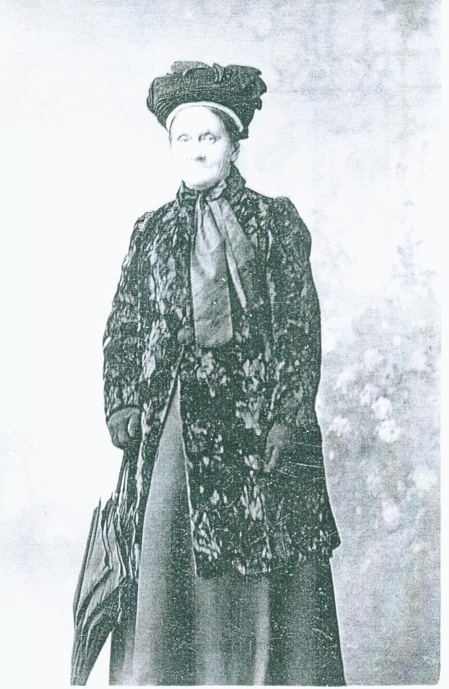
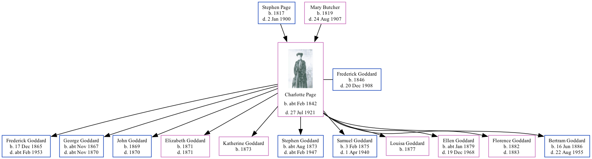

Charlotte Ann Goddard (née Page) cFeb 1842 - 1921 [ Home ] | [ Calendar ] | [ Surnames Index ] | [ Family History ]A laundress and the child of Stephen Page (an agricultural laborer) and Mary Butcher Charlotte Page , the first cousin three-times-removed on the father's side of Nigel Horne , was born in Hawkinge, Kent, England c. Feb 18421,2,3 , was baptized in Folkestone, Kent, England on Feb 6, 1842 and also married Frederick Goddard (a plumber's laborer with whom she had 11 children: Frederick Thomas , George Stephen , John , Elizabeth Jane , Katherine , Stephen Page , Samuel , Louisa J , Ellen Charlotte , Florence Julia and Bertram Charles ) there at Christ Church, on Sep 10, 18656 .
Charlotte spent all of her life in Kent, England. Throughout her life, she lived in several places around the county: on Gibraltar Lane in Folkestone on Mar 30, 18511 ; on Mill Lane in Folkestone on Apr 7, 186114 ; at Back Berkley Place Cottage in Folkestone on Apr 2, 187110 ; on Foord Road in Folkestone on Apr 3, 188111 ; and on 65 Foord Road in Folkestone on Apr 5, 18919 , on Mar 31, 190112 , on Apr 2, 191113 following the death of her husband on Dec 20, 1908 and in 19198 .
She died on Jul 27, 1921 at 49 St John's Street in Folkestone3,4,5 and was buried at Cheriton Road Cemetery, Folkestone on Jul 30, 19217 .
Parents Stephen was born in 1817Mary Julia was born in 1819Children Frederick Thomas was born on Dec 17, 1865George Stephen was born c. Nov 1867John was born in 1869Elizabeth Jane was born in 1871Katherine was born in 1873Stephen Page was born c. Aug 1873Samuel was born on Feb 3, 1875Louisa J was born in 1877Ellen Charlotte was born c. Jan 1879Florence Julia was born in 1882Bertram Charles was born on Jun 16, 1886Citations 1851 England, Wales & Scotland Census - Findmypast (was age 9 and the daughter of the head of the household) England & Wales births 1837-2006 - Findmypast England & Wales deaths 1837-2007 - Findmypast England Billion Graves cemetery index - Findmypast Kent, Folkestone Cheriton Road Cemetery Memorial Inscriptions - Findmypast Kent Marriages And Banns - Findmypast https://www.findagrave.com/memorial/205770983/charlotte-ann-goddard http://freepages.rootsweb.com/~folkestonefamilies/genealogy/joan.htm 1891 England, Wales & Scotland Census - Findmypast (was age 48 and the wife of the head of the household) 1871 England, Wales & Scotland Census - Findmypast (was age 27 and the wife of the head of the household) 1881 England, Wales & Scotland Census - Findmypast (was age 34 and the wife of the head of the household) 1901 England, Wales & Scotland Census - Findmypast (was age 59 and the wife of the head of the household) 1911 Census for England & Wales - Findmypast (was age 69 and the head of the household) 1861 England, Wales & Scotland Census - Findmypast (was age 19 and a servant in the household) Notes Letters to America From Folkestone: freepages.rootsweb.com .
Media Charlotte Ann Page  England & Wales births 1837-2006 - BMD/B/1842/1/IR/000743/117 England & Wales deaths 1837-2007 - BMD/D/1921/3/AZ/000299/041 1891 England, Wales & Scotland Census - GBC/1891/0006012123 Kent marriages and banns - GBPRS/CANT/M/97000284/2 England Marriages 1538-1973 - R_848276891/2 England Marriages 1538-1973 - R_848278398/2 England & Wales marriages 1837-2005 - BMD/M/1865/3/HZ/000657/029 England Births & Baptisms 1538-1975 - R_885258373 England Billion Graves cemetery index - US/BMD/BILLION/5/000029067098 1881 England, Wales & Scotland Census - GBC/1881/0004951840 1871 England, Wales & Scotland Census - GBC/1871/0014384998 Kent, Folkestone Cheriton Road Cemetery memorial inscriptions - GBPRS/KENT/MIS00003534 1901 England, Wales & Scotland Census - GBC/1901/0005830955 1911 Census for England & Wales - GBC/1911/RG14/04640/0359/1 1861 England, Wales & Scotland Census - GBC-1861-0003618423 Family Tree Map
Generated by ged2site . Last updated on Feb 28, 2025